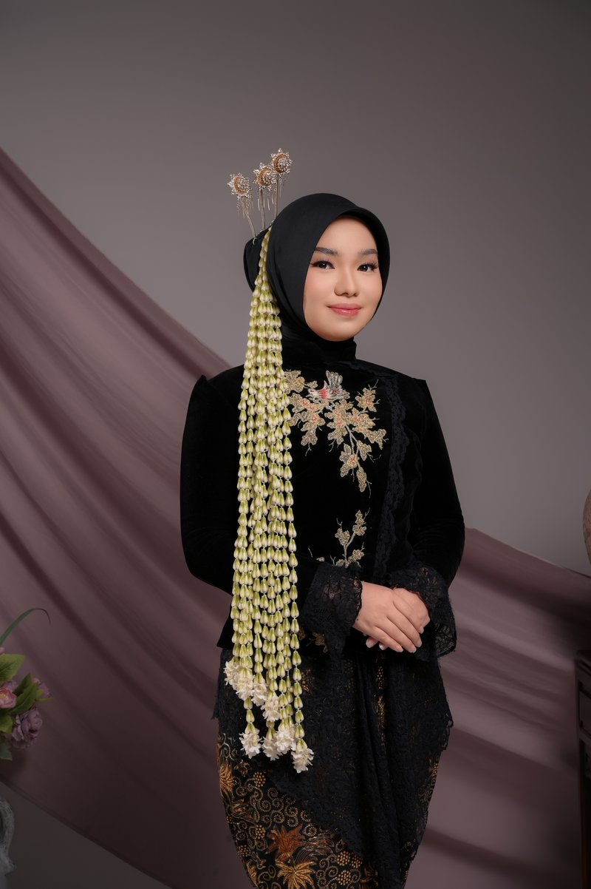
Leony Puspita Wijaya
Leony
Putri dari
H. Wirja Wijaya & Hj. Pupu Sopandy
leony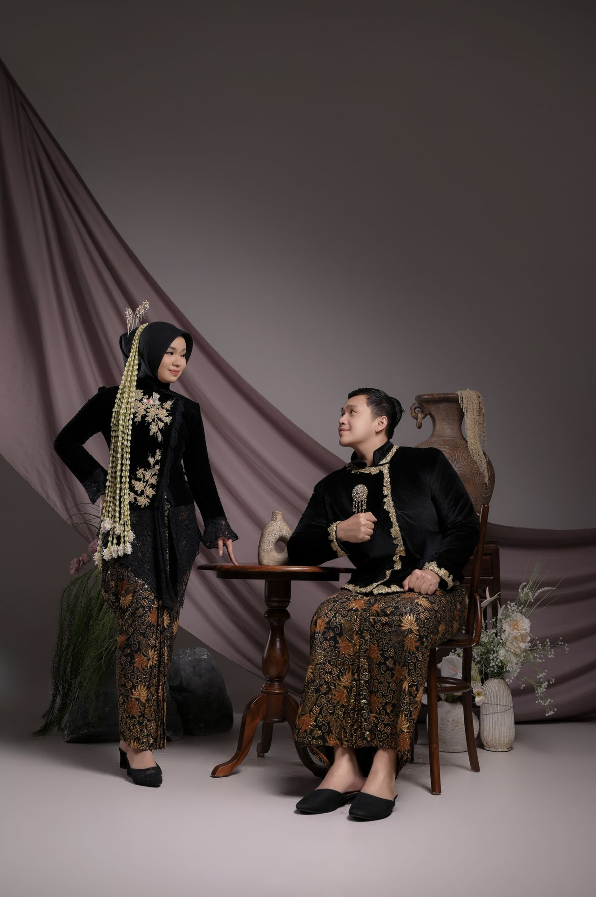
The Wedding Of
Sabtu · 12 · Desember · 2026
Kepada Yth. Bapak/Ibu/Saudara/i
Tamu Undangan
di tempat Anda
Undangan Pernikahan
Leony & Fikhri
Sabtu, 12 Desember 2026
Dua hati yang dipertemukan dalam kasih kini melangkah bersama menuju janji suci — semoga Allah menjadikan kami keluarga yang sakinah, mawaddah, warahmah.
Kalam Ilahi
وَمِنْ آيَاتِهِ أَنْ خَلَقَ لَكُم مِّنْ أَنفُسِكُمْ أَزْوَاجًا لِّتَسْكُنُوا إِلَيْهَا وَجَعَلَ بَيْنَكُم مَّوَدَّةً وَرَحْمَةً ۚ إِنَّ فِي ذَٰلِكَ لَآيَاتٍ لِّقَوْمٍ يَتَفَكَّرُونَ
"Dan di antara tanda-tanda kebesaran-Nya ialah Dia menciptakan pasangan-pasangan untukmu dari jenismu sendiri, agar kamu merasa tenteram kepadanya, dan Dia menjadikan di antaramu rasa kasih dan sayang."
QS. Ar-Rum · 21
Mempelai
Assalamu'alaikum warahmatullahi wabarakatuh. Dengan memohon rahmat dan ridha Allah SWT, kami bermaksud menyelenggarakan pernikahan putra-putri kami tercinta:
Rangkaian Acara
Dengan hormat kami mengundang Anda untuk hadir dan memberikan doa restu pada rangkaian acara berikut:
Akad Nikah
Sabtu, Pagi
12
Desember 2026
Ramah Tamah
Sabtu, Siang
12
Desember 2026
Menuju Hari Bahagia
Leony & Fikhri
Sudah tiba waktanya — hari bahagia telah datang. Terima kasih atas doa dan restu Anda!
Galeri
Sela-sela perjalanan kecil yang kemudian membawa kami ke hari ini.
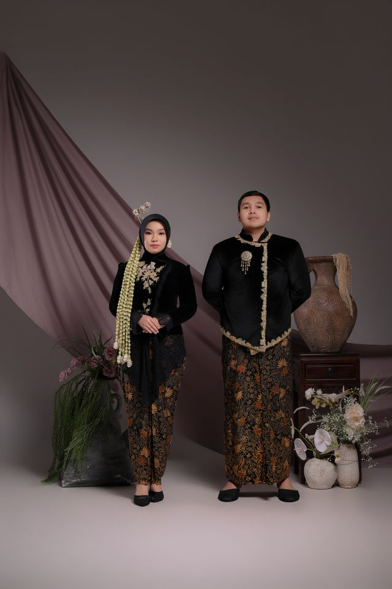
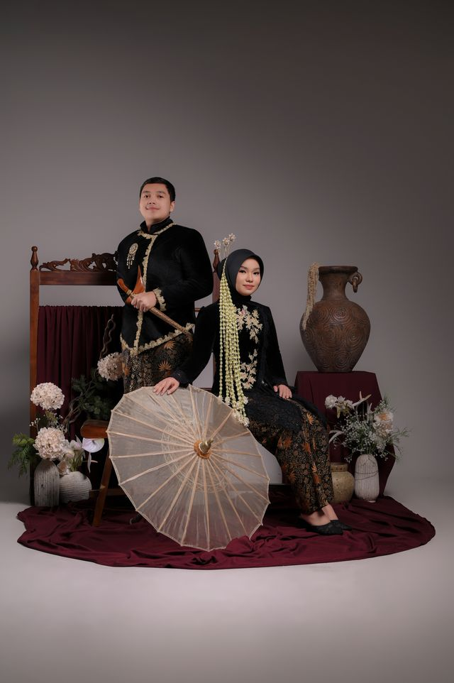
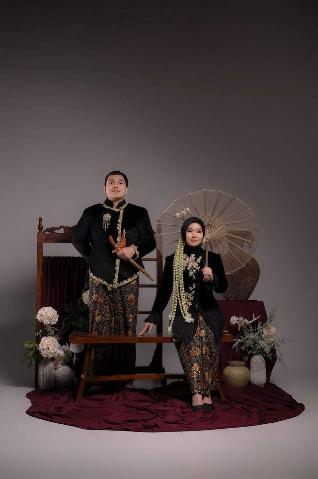
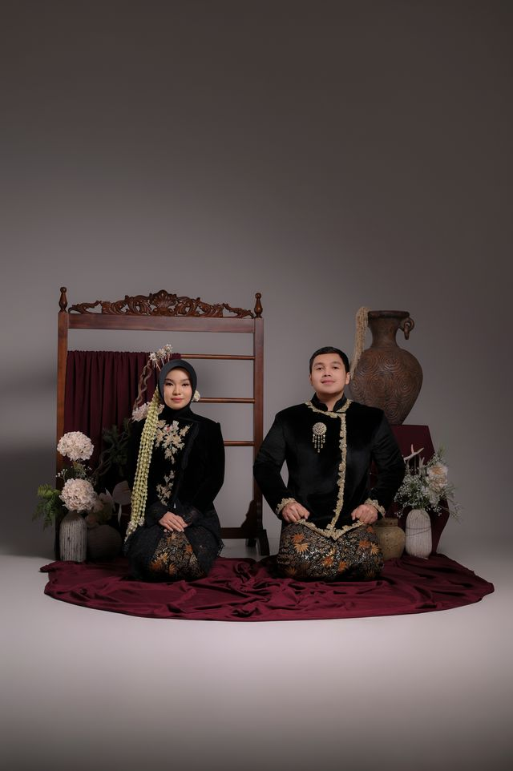
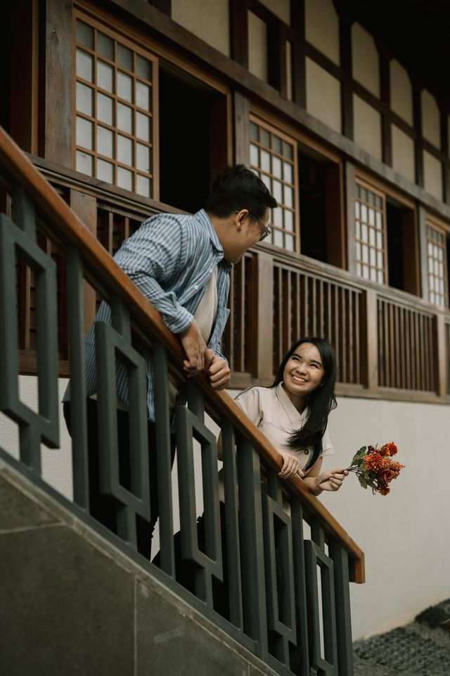
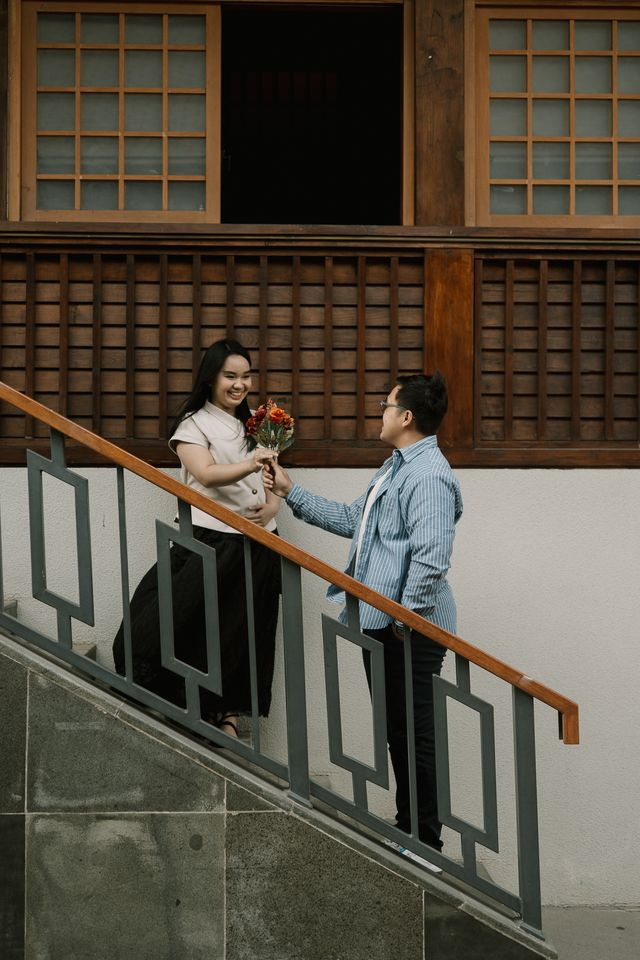
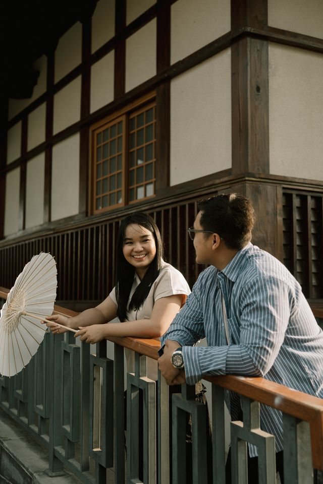
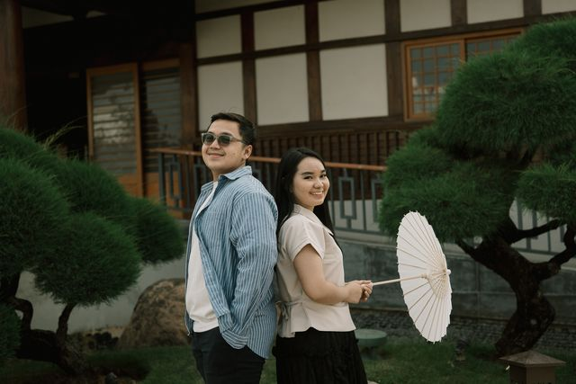
Ketuk foto untuk memperbesar
Tanda Kasih
Kehadiran Anda adalah hadiah terindah bagi kami. Namun jika ingin memberi tanda kasih, kami menyediakan:
Bank ....
000000000
a.n. Leony
Bank .....
00000000
a.n. Fikhri
Kirim Kado Fisik
Leony & Fikhri — Nama Alamat Rumah
Konfirmasi Kehadiran
Mohon konfirmasi kehadiran Anda sebelum 28 November 2026.
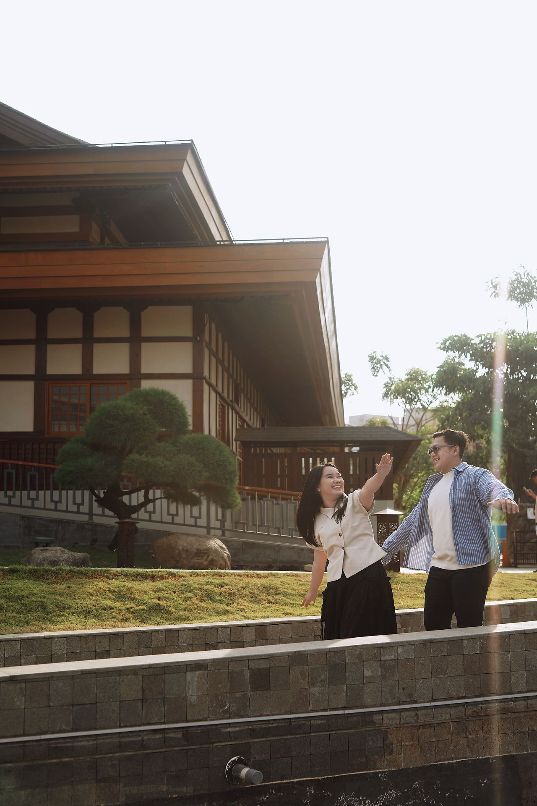
Merupakan suatu kehormatan dan kebahagiaan bagi kami sekeluarga apabila Bapak/Ibu/Saudara/i berkenan hadir untuk memberikan doa restu kepada kedua mempelai. Atas kehadiran dan doanya, kami mengucapkan terima kasih.
Wassalamu'alaikum warahmatullahi wabarakatuh
Kami yang berbahagia
Keluarga Bpk. H. Wirja Wijaya & Ibu Hj. Pupu Sopandy
Keluarga Bpk. H. Samino & Ibu Hj. Rita Fitrina